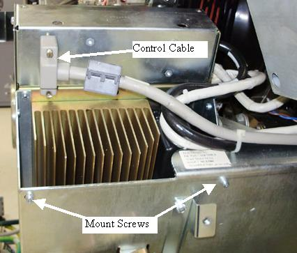
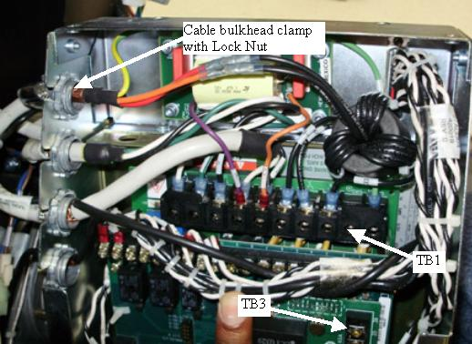
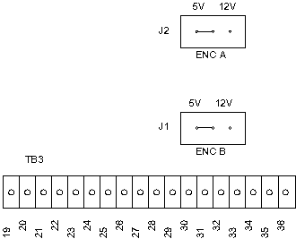

Operating Documentation
Direction 5193575-800, Rev# 5
LightSpeed 7.X Service Information - Adv
Operating Documentation |
| Required Persons | Preliminary Reqs | Procedure | Finalization |
|---|---|---|---|
| 1 | Timing Not Applicable | 60 mins | 45 mins |
This procedure defines the steps necessary to replace the Axial Drive Module.
| Last Revised: | July 7, 2008 |
| Item | Qty | Effectivity | Part# | Manufacturer | |
|---|---|---|---|---|---|
| Standard FE Tool Kit | 1 | - | - | - | |
| 3 mm and 5 mm hex wrenches | 1 | - | - | - | |
| Item | Qty | Effectivity | Part# | Manufacturer |
|---|---|---|---|---|
| Cable Ties | - | - | - | |
| Hand towels, for cleanup | - | - | - |
| Item | Qty | Effectivity | Part# | Manufacturer | |
|---|---|---|---|---|---|
| Axial Drive Module | 1 | - | - | - | |
| ELECTROCUTION HAZARD | |
| HIGH VOLTAGES PRESENT. | |
| Use proper lockout/tagout procedures before replacing components. See safety menu of Service Document gui for appropriate procedures. |
| Follow ALL required safety and PPE procedures customary for your organization when working on this product. | |
| Condition | Reference | Eff |
|---|---|---|
Only trained service personnel should service the GE CT Scanner. | - | - |
Move the table to the home position.
Remove gantry right side cover.
Refer to Replacement → Gantry → Enclosure → (Cover Removal Procedures).
Turn OFF the Axial Drive and HVDC switches on the gantry’s Service Switch Panel.
Rotate the tube to the 6 o'clock position to provide open access to the axial drive module.
Turn OFF the 120 VAC switch on the gantry’s Service Switch Panel.
Remove the gantry left side cover, top covers and front and rear covers.
| ELECTROCUTION HAZARD | |
| HIGH VOLTAGES PRESENT. | |
| Use proper lockout/tagout procedures before replacing components. See safety menu of Service Document gui for appropriate procedures. |
Perform all required LOTO activities to remove all power from the gantry.
Remove the gantry right side tilting safety cover for easier access to the drive module.
Disconnect the control cable from the backside of the ADM assembly.
Illustration 1: Axial Drive Module Rear View

Remove Axial Drive Module (ADM) front cover by loosening the two (2) thumb screws and sliding the cover up and off the drive module.
Disconnect the 3 phase VAC power connections at TB1 R, S, T. Check to make sure cables are labeled otherwise write down colors for later reference. See Illustration 2 for this and subsequent steps for terminal block locations.
Illustration 2: Cable Connections

Disconnect the output PWM cable to the motor at TB1 U, W, V. Check to make sure cables are labeled otherwise write down colors for later reference.
Disconnect the Axial Dynamic Brake cable connections at TB1 DC+, DC- and TB3 24, 25. Check to make sure cables are labeled otherwise write down colors for later reference.
Using a flat-blade screwdriver, carefully loosen and fully remove the lock nuts from the Cable bulkhead clamps (4 total). Reference Illustration 2. With the lock nuts removed from the bulkhead clamp, slide the bulkhead clamp out of the sheet metal side and pull the cable up through the slots such that the cables are now free from the Drive Module housing. Carefully cut and remove cable ties as needed.
Disconnect the molex connection at the holding brake relay between the drive module and the axial motor.
Remove the six (6) M4 screws using the 3 mm hex key. Four (4) screws are on the back side (gantry right side) and two (2) are on the side near the holding brake/motor. Reference Illustration 1. This will separate the ADM assembly, including the two (2) trapezoid shaped support brackets, from the main support bracket.
Verify the two (2) jumpers are in the 5V encoder position on the new ADM assembly (see Illustration 3).
Illustration 3: Axial Motor Drive Encoder Board Jumpers

Assemble the new Axial Drive Module in reverse order. Remember to replace all removed cable ties.
Remove LOTO to restore system power but do not turn on the gantry service switches yet.
Install the front, rear top and left side gantry covers.
Refer to Replacement → Gantry → Enclosure → (Cover Removal Procedures).
Enable 120 VAC HVDC and Axial Drive service switches from the service switch panel. Press the table drives enable button on the lower right corner of the service switch panel.
Install the gantry right side cover.
Perform the Gantry Rotation Safety Check.
Perform gantry rotational testing using Axial Functional Diagnostic. Service Desktop>Diagnostics>Axial Functional.
Perform one (1) pass each "Open Loop Rotation" at each scan speed. Verify no errors.
Perform one (1) pass each "Closed Loop Rotation" at each scan speed. Verify no errors.
Perform several passes of "Goto Position" choosing different angles. Verify no errors.
Perform a [Fastcal] from the [Daily Prep] screen on the operator console.